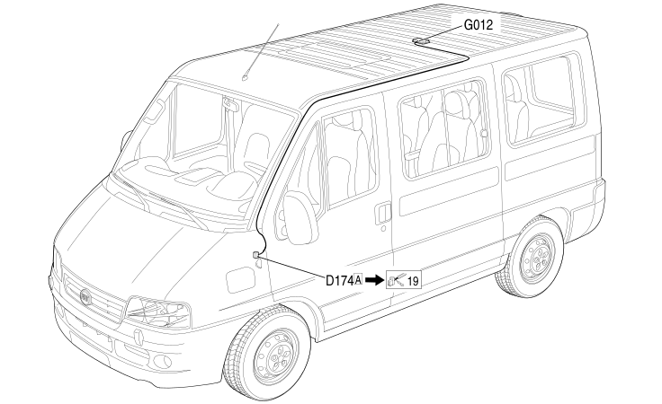

107 PASSENGER AREA FRONT COURTESY LIGHT BRIDGE
- Path
- Electrical equipment > 2 WIRING > 107 PASSENGER AREA FRONT COURTESY LIGHT BRIDGE
- Kind
- wiring harness
- Applies to
- all engines; all production periods; only with equipment: Combi
- Interactive page
- https://sloeber94.github.io/elrnDB-fDct/en/#/244002297
Applies to: all engines; all production periods; only with equipment: Combi

Topics that link to this page (28)
- D174A OPTIONAL DASHBOARD/PASSENGER COURTESY LIGHT COUPLING (PASSENGER AREA FRONT COURTESY LIGHT BRIDGE)
- D174A OPTIONAL DASHBOARD/PASSENGER COURTESY LIGHT COUPLING (PASSENGER AREA FRONT COURTESY LIGHT BRIDGE)
- D174B OPTIONAL DASHBOARD/PASSENGER COURTESY LIGHT COUPLING (PASSENGER AREA FRONT COURTESY LIGHT BRIDGE)
- D174C OPTIONAL DASHBOARD/PASSENGER COURTESY LIGHT COUPLING (PASSENGER AREA FRONT COURTESY LIGHT BRIDGE)
- D175 DASHBOARD/PASSENGER COURTESY LIGHT COUPLING (PASSENGER AREA FRONT COURTESY LIGHT BRIDGE)
- D175 DASHBOARD/PASSENGER COURTESY LIGHT COUPLING (PASSENGER AREA FRONT COURTESY LIGHT BRIDGE)
- D175 DASHBOARD/PASSENGER COURTESY LIGHT COUPLING (PASSENGER AREA FRONT COURTESY LIGHT BRIDGE)
- G010A FRONT COURTESY LIGHT (PASSENGER AREA FRONT COURTESY LIGHT BRIDGE)
- G010B FRONT COURTESY LIGHT (PASSENGER AREA FRONT COURTESY LIGHT BRIDGE)
- G010C FRONT COURTESY LIGHT (PASSENGER AREA FRONT COURTESY LIGHT BRIDGE)
- G010D FRONT COURTESY LIGHT (PASSENGER AREA FRONT COURTESY LIGHT BRIDGE)
- G011 PASSENGER AREA FRONT COURTESY LIGHT (PASSENGER AREA FRONT COURTESY LIGHT BRIDGE)
- G011A PASSENGER AREA FRONT COURTESY LIGHT (PASSENGER AREA FRONT COURTESY LIGHT BRIDGE)
- G011B PASSENGER AREA FRONT COURTESY LIGHT (PASSENGER AREA FRONT COURTESY LIGHT BRIDGE)
- G011C PASSENGER AREA FRONT COURTESY LIGHT (PASSENGER AREA FRONT COURTESY LIGHT BRIDGE)
- G011D PASSENGER AREA FRONT COURTESY LIGHT (PASSENGER AREA FRONT COURTESY LIGHT BRIDGE)
- G012 PASSENGER AREA REAR COURTESY LIGHT (PASSENGER AREA FRONT COURTESY LIGHT BRIDGE)
- G012 PASSENGER AREA REAR COURTESY LIGHT (PASSENGER AREA FRONT COURTESY LIGHT BRIDGE)
- G012A PASSENGER AREA REAR COURTESY LIGHT (PASSENGER AREA FRONT COURTESY LIGHT BRIDGE)
- G012B PASSENGER AREA REAR COURTESY LIGHT (PASSENGER AREA FRONT COURTESY LIGHT BRIDGE)
- G012C PASSENGER AREA REAR COURTESY LIGHT (PASSENGER AREA FRONT COURTESY LIGHT BRIDGE)
- G012D PASSENGER AREA REAR COURTESY LIGHT (PASSENGER AREA FRONT COURTESY LIGHT BRIDGE)
- N084A PASSENGER COMPARTMENT ADDITIONAL FAN (PASSENGER AREA FRONT COURTESY LIGHT BRIDGE)
- N084B PASSENGER COMPARTMENT ADDITIONAL FAN (PASSENGER AREA FRONT COURTESY LIGHT BRIDGE)
- P122 LEFT REAR SPEAKER IN ROOF (PASSENGER AREA FRONT COURTESY LIGHT BRIDGE)
- P122 LEFT REAR SPEAKER IN ROOF (PASSENGER AREA FRONT COURTESY LIGHT BRIDGE)
- P123 RIGHT REAR SPEAKER IN ROOF (PASSENGER AREA FRONT COURTESY LIGHT BRIDGE)
- P123 RIGHT REAR SPEAKER IN ROOF (PASSENGER AREA FRONT COURTESY LIGHT BRIDGE)